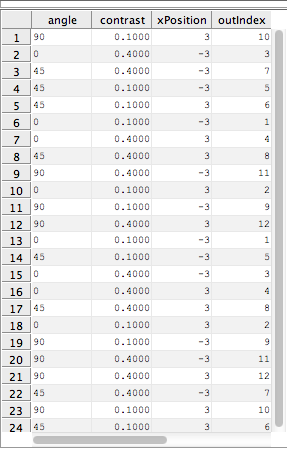
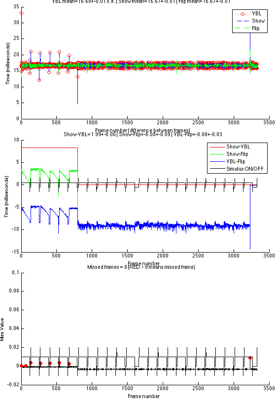

Demonstration of a command-driven setup of an Opticka Experiment.
Opticka is an object oriented framework/GUI for the Psychophysics toolbox, allowing randomised interleaved presentation of parameter varying stimuli specified in experimenter-relevant values. It is designed to work on OS X, Windows (currently no digital I/O) or Linux, and can interface via strobed words (using a cheap and very reliable LabJack) and ethernet with external harware for recording neurophysiological data. In this example, Stimulus objects (myStim class cell array), stimulus sequence variables (myTask object), and screenManager (myScreen object) are passed to the runExperiment object for final display. Opticka also has a UI (type opticka in the command window), which is a visual manager of the objects introduced here. The UI also controls other functions such as calibration, protocol loading/saving and communication with neurophysiological equipment via LabJack and ethernet. There is also an independent receptive field mapper (rfMapper) that uses mouse control to probe receptive fields and generate drawn hand maps.
The source of this file can be found at: https://github.com/iandol/opticka/blob/master/runtest.m
Contents
Initial clear up of previous runs
Make sure we start in a clean environment, not essential
clear myStim myTask myScreen rExp sca
PTB-DEBUG: IOConnectMethodScalarIScalarO for driver instance 102147 returned 0xe00002c5. Kernel driver support disabled. PTB-DEBUG: Please check if other applications (e.g., other open Matlab or Octave instances) use the driver already. PTB-DEBUG: IOConnectMethodScalarIScalarO for driver instance 102151 returned 0xe00002c5. Kernel driver support disabled. PTB-DEBUG: Please check if other applications (e.g., other open Matlab or Octave instances) use the driver already.
Stimulus Initialisation
These set up the 10 different stimuli. Please note that values are in degrees, cycles/deg, deg/s etc. Colour is repestend using floating point values from 0 - 1 and all objects accept an opacity (alpha) value. Each stimulus is a class object with a series of properties ('sf', 'colour' etc.) that you can set up by simply passing property name : value pairs into the stimulus class. You can also pass these in as a structure if you prefer. If you do not pass any properties, default values will be used without problems.
First we create a stimulus manager that collects and handles groups of stimuli as if they were a single 'thing', so for example when you use the draw method on a stimulus manager, it tells each of its child stimuli to draw in turn
myStim = metaStimulus();
The first six stimuli are gratings / gabors of varying kinds.
myStim{1}=gratingStimulus('sf',1,'contrast',0.5,'size',1,'tf',0,'angle',30,...
'gabor', 0, 'mask', 1);
myStim{2}=gratingStimulus('sf',3,'contrast',0.5,'tf',1,'size',3,'xPosition',-3,...
'yPosition',-4,'gabor',1,'mask',0);
myStim{3}=gratingStimulus('sf',1,'contrast',0.5,'size',3,'angle',45,'xPosition',-2,...
'yPosition',2,'gabor',0,'mask',1,'speed',2);
myStim{4}=gratingStimulus('sf',1,'contrast',0.5,'tf',0,'size',2,'xPosition',-3,...
'yPosition',-3,'gabor',0,'mask',1,'speed',2);
myStim{5}=gratingStimulus('sf',1,'contrast',0.25,'colour',[0.6 0.3 0.3],'tf',0.1,...
'size',2,'xPosition',3,'yPosition',0,'gabor',0,'mask',0);
myStim{6}=gratingStimulus('sf',1,'contrast',0.5,'colour',[0.4 0.4 0.6],'tf',1,...
'driftDirection',-1,'size',2,'xPosition',4,'yPosition',-4,'gabor',0,'mask',1);
A simple bar: bars can be solid in colour or have random texture (try setting 'type' to 'random'). This is an opaque solid yellow bar moving at 4deg/s. Notice the startPosition is -4; this means start -4 degrees "behind" start X and Y position, as the stimulus is displayed for 2 seconds the bar therefore traverses 4degrees behind then 4 degrees past the X and Y position. Also note as we will change the angle of this stimulus the geometry is calculated for you automatically!
myStim{7}=barStimulus('type','solid','barWidth',1,'barLength',4,'speed',4,'xPosition',0,...
'yPosition',0,'startPosition',-4,'colour',[.7 .7 .7]);
coherent dot stimulus; 200 dots moving at 1deg/s with coherence set to 0.5
myStim{8}=dotsStimulus('density',50,'speed',1,'coherence',0.5,'xPosition',4,...
'yPosition',6,'colour',[1 1 1],'dotSize',0.1,'colorType','randomBW');
a simple circular spot, spots can also flash if needed
myStim{9}=spotStimulus('speed',2,'xPosition',4,'type','flash',...
'yPosition',4,'colour',[1 1 0],'size',1,'flashTime',[0.2 0.2]);
a texture stimulus, by default this loads a picture from the opticka stimulus directory; you can rotate it, scale it etc and drift it across screen as in this case
myStim{10}=textureStimulus('speed',2,'xPosition',-6,...
'yPosition',6,'size',0.5);
Task Initialisation
The stimulusSequence class defines a stimulus sequence (task) which is composed of randomised stimulus parameter changes (called variables) repeated over a set of blocks. A trial is an individual stimulus presentation. This example has three different variables changing over 3*2*2 values (12 unique trials) which is then repeated over 2 blocks for 24 trials in total
myTask = stimulusSequence; %new stimulusSequence object instance myTask.nBlocks = 2; %number of blocks myTask.trialTime = 2; %time of stimulus display: 2 seconds myTask.isTime = 0.25; %inter trial time: 0.25 seconds myTask.ibTime=1; %inter block time: 1 second
Variable 1
Our first variable is angle, applied to stimulus 1 3 7 and 10, randomly selected from values of 0 45 and 90 degrees
myTask.nVar(1).name = 'angle';
myTask.nVar(1).stimulus = [1 3 7 10];
myTask.nVar(1).values = [0 45 90];
Variable 2
Our second variable is contrast, applied to stimulus 2 and 3, randomly selected from values of 0.025 and 0.1
myTask.nVar(2).name = 'contrast';
myTask.nVar(2).stimulus = [2 3];
myTask.nVar(2).values = [0.1 0.4];
Variable 3
Our third variable is X position, applied to stimulus 2 and 8, randomly selected from values of -3 and 3 degrees from visual center of screen
myTask.nVar(3).name = 'xPosition'; myTask.nVar(3).stimulus = [2 8]; myTask.nVar(3).values = [-3 3]; % the next two parameters allow us to link a stimulus with % an offset; for example you could set stimulus 1 to values [1 2 3] % and if offsetvalue was 2 and offsetstimulus was 2 then the second % stimulus would change through [3 4 5]; in this case we offset stimulus 10 % to +1 the values above i.e. [-2 4] myTask.nVar(3).offsetstimulus = [10]; myTask.nVar(3).offsetvalue = [1];
Randomisation
We call the method to randomise the trials in a block structure
randomiseStimuli(myTask);
Visual Trial List
Lets print out a log of the stimulus properties for every trial
showLog(myTask);
Setup screenManager Object
we initialise the object with parameter options to open the PTB screen with. Note distance and pixels per cm define the resultant geometry > pixel mappings. You can set several screen parameters, windowing, blending etc. hideFlash uses a trick from Mario to set the CLUT to the task background colour so you don't see the black flash on PTB screen initialisation.
myScreen = screenManager('distance', 57.3,... 'pixelsPerCm', 44,... 'blend', true,... %enable OpenGL blending, you can also set blend modes when needed 'windowed', 0,... %set to a widthxheight for debugging i.e. [800 600]; set to 0 for fullscreen 'antiAlias', 0,... %can be set to 4 or 8x oversampling with no dropped frames on OS X ATI 5870 'bitDepth', '8bit',... %try 8bit, FloatingPoint16bit FloatingPoint32bit 'logFrames', 'true',... %every screen flip is logged for full missed frame accounting. 'benchmark', 'false',... %when true flip as fast as possible, turn logFrames off to work 'hideFlash', true); %mario's gamma trick
---> screenManager#1250BF8D2: Constructor parsing input argument | distance ---> screenManager#1250BF8D2: Constructor parsing input argument | pixelsPerCm ---> screenManager#1250BF8D2: Constructor parsing input argument | blend ---> screenManager#1250BF8D2: Constructor parsing input argument | windowed ---> screenManager#1250BF8D2: Constructor parsing input argument | antiAlias ---> screenManager#1250BF8D2: Constructor parsing input argument | bitDepth ---> screenManager#1250BF8D2: Constructor parsing: invalid input | logFrames ---> screenManager#1250BF8D2: Constructor parsing: invalid input | benchmark ---> screenManager#1250BF8D2: Constructor parsing input argument | hideFlash ---> screenManager#1250BF8D2: 64bit OS X PTB currently supported!
Setup runExperiment Object
We now pass our stimulus screen and sequence objects to the runExperiment class. runExperinet contains the run class that actually runs the task.
rExp = runExperiment('stimuli', myStim,... 'task', myTask,... 'screen', myScreen,... 'debug', false,... 'verbose', false);
---> runExperiment#1250C24AF: Constructor parsing: invalid input | stimuli ---> runExperiment#1250C24AF: Constructor parsing: invalid input | task ---> runExperiment#1250C24AF: Constructor parsing: invalid input | screen ---> runExperiment#1250C24AF: Constructor parsing: invalid input | debug ---> runExperiment#1250C24AF: Constructor parsing: invalid input | verbose ---> runExperiment#1250C24AF: Constructor parsing input argument | stimuli ---> runExperiment#1250C24AF: Constructor parsing input argument | task ---> runExperiment#1250C24AF: Constructor parsing input argument | screen ---> runExperiment#1250C24AF: Constructor parsing input argument | debug ---> runExperiment#1250C24AF: Constructor parsing input argument | verbose
run our experiment, to exit early, press the right (OS X) or middle (Win/Linux) mouse button
run(rExp);
---> labJack: labJack running in silent mode... | CONSTRUCTOR Method
PTB-INFO: This is Psychtoolbox-3 for Apple OS X, under Matlab 64-Bit (Version 3.0.10 - Build date: Sep 6 2012).
PTB-INFO: Type 'PsychtoolboxVersion' for more detailed version information.
PTB-INFO: Most parts of the Psychtoolbox distribution are licensed to you under terms of the MIT License, with
PTB-INFO: some restrictions. See file 'License.txt' in the Psychtoolbox root folder for the exact licensing conditions.
PTB-INFO: Using CGL for fullscreen onscreen window creation...
PTB-INFO: Using GLEW version 1.5.3 for automatic detection of OpenGL extensions...
PTB-INFO: Connection to kernel-level vbl handler established (shmem = 0x149800000).
PTB-INFO: Broken Apple OS/X 10.7 or later detected: Using CoreVideo timestamping instead of precise vbl-irq timestamping.
PTB-INFO: CVDisplayLink for screen 0 created to work around the brokenness of Apple Mac OS/X 10.7 and later:
PTB-INFO: Video refresh interval as measured by CoreVideo display link: 16.669370 msecs.
PTB-INFO: Video display output delay as reported by CoreVideo display link: nan msecs.
OpenGL-Extensions are: GL_ARB_color_buffer_float GL_ARB_depth_buffer_float GL_ARB_depth_clamp GL_ARB_depth_texture GL_ARB_draw_buffers GL_ARB_draw_elements_base_vertex GL_ARB_draw_instanced GL_ARB_fragment_program GL_ARB_fragment_program_shadow GL_ARB_fragment_shader GL_ARB_framebuffer_object GL_ARB_framebuffer_sRGB GL_ARB_half_float_pixel GL_ARB_half_float_vertex GL_ARB_imaging GL_ARB_instanced_arrays GL_ARB_multisample GL_ARB_multitexture GL_ARB_occlusion_query GL_ARB_pixel_buffer_object GL_ARB_point_parameters GL_ARB_point_sprite GL_ARB_provoking_vertex GL_ARB_seamless_cube_map GL_ARB_shader_objects GL_ARB_shader_texture_lod GL_ARB_shading_language_100 GL_ARB_shadow GL_ARB_sync GL_ARB_texture_border_clamp GL_ARB_texture_compression GL_ARB_texture_compression_rgtc GL_ARB_texture_cube_map GL_ARB_texture_env_add GL_ARB_texture_env_combine GL_ARB_texture_env_crossbar GL_ARB_texture_env_dot3 GL_ARB_texture_float GL_ARB_texture_mirrored_repeat GL_ARB_texture_non_power_of_two GL_ARB_texture_rectangle GL_ARB_texture_rg GL_ARB_transpose_matrix GL_ARB_vertex_array_bgra GL_ARB_vertex_blend GL_ARB_vertex_buffer_object GL_ARB_vertex_program GL_ARB_vertex_shader GL_ARB_window_pos GL_EXT_abgr GL_EXT_bgra GL_EXT_bindable_uniform GL_EXT_blend_color GL_EXT_blend_equation_separate GL_EXT_blend_func_separate GL_EXT_blend_minmax GL_EXT_blend_subtract GL_EXT_clip_volume_hint GL_EXT_compiled_vertex_array GL_EXT_depth_bounds_test GL_EXT_draw_buffers2 GL_EXT_draw_range_elements GL_EXT_fog_coord GL_EXT_framebuffer_blit GL_EXT_framebuffer_multisample GL_EXT_framebuffer_multisample_blit_scaled GL_EXT_framebuffer_object GL_EXT_framebuffer_sRGB GL_EXT_geometry_shader4 GL_EXT_gpu_program_parameters GL_EXT_gpu_shader4 GL_EXT_multi_draw_arrays GL_EXT_packed_depth_stencil GL_EXT_packed_float GL_EXT_provoking_vertex GL_EXT_rescale_normal GL_EXT_secondary_color GL_EXT_shadow_funcs GL_EXT_stencil_two_side GL_EXT_stencil_wrap GL_EXT_texture_array GL_EXT_texture_compression_dxt1 GL_EXT_texture_compression_s3tc GL_EXT_texture_env_add GL_EXT_texture_filter_anisotropic GL_EXT_texture_integer GL_EXT_texture_lod_bias GL_EXT_texture_mirror_clamp GL_EXT_texture_rectangle GL_EXT_texture_shared_exponent GL_EXT_texture_sRGB GL_EXT_texture_sRGB_decode GL_EXT_timer_query GL_EXT_transform_feedback GL_EXT_vertex_array_bgra GL_APPLE_aux_depth_stencil GL_APPLE_client_storage GL_APPLE_element_array GL_APPLE_fence GL_APPLE_float_pixels GL_APPLE_flush_buffer_range GL_APPLE_flush_render GL_APPLE_object_purgeable GL_APPLE_packed_pixels GL_APPLE_pixel_buffer GL_APPLE_rgb_422 GL_APPLE_row_bytes GL_APPLE_specular_vector GL_APPLE_texture_range GL_APPLE_transform_hint GL_APPLE_vertex_array_object GL_APPLE_vertex_array_range GL_APPLE_vertex_point_size GL_APPLE_vertex_program_evaluators GL_APPLE_ycbcr_422 GL_ATI_separate_stencil GL_ATI_texture_env_combine3 GL_ATI_texture_float GL_ATI_texture_mirror_once GL_IBM_rasterpos_clip GL_NV_blend_square GL_NV_conditional_render GL_NV_depth_clamp GL_NV_fog_distance GL_NV_fragment_program_option GL_NV_fragment_program2 GL_NV_light_max_exponent GL_NV_multisample_filter_hint GL_NV_point_sprite GL_NV_texgen_reflection GL_NV_vertex_program2_option GL_NV_vertex_program3 GL_SGIS_generate_mipmap GL_SGIS_texture_edge_clamp GL_SGIS_texture_lod
PTB-INFO: Implausible measured vblank endline 1800 indicates that the beamposition query workaround should be used for your GPU.
PTB-INFO: Enabling the beamposition workaround, as explained in 'help ConserveVRAM', section 'kPsychUseBeampositionQueryWorkaround'.
PTB-INFO: The detected endline of the vertical blank interval is equal or lower than the startline. This indicates
PTB-INFO: that i couldn't detect the duration of the vertical blank interval and won't be able to correct timestamps
PTB-INFO: for it. This will introduce a very small and constant offset (typically << 1 msec). Read 'help BeampositionQueries'
PTB-INFO: for how to correct this, should you really require that last few microseconds of precision.
PTB-INFO: Btw. this can also mean that your systems beamposition queries are slightly broken. It may help timing precision to
PTB-INFO: enable the beamposition workaround, as explained in 'help ConserveVRAM', section 'kPsychUseBeampositionQueryWorkaround'.
PTB-INFO: OpenGL-Renderer is NVIDIA Corporation :: NVIDIA GeForce GT 650M OpenGL Engine :: 2.1 NVIDIA-8.0.51
PTB-INFO: Renderer has 1024 MB of VRAM and a maximum 986 MB of texture memory.
PTB-INFO: VBL startline = 1800 , VBL Endline = 1800
PTB-INFO: Measured monitor refresh interval from beamposition = 16.669158 ms [59.991031 Hz].
PTB-INFO: Will use beamposition query for accurate Flip time stamping.
PTB-INFO: Measured monitor refresh interval from VBLsync = 16.669718 ms [59.989018 Hz]. (299 valid samples taken, stddev=0.521962 ms.)
PTB-INFO: Small deviations between reported values are normal and no reason to worry.
PTB-INFO: Using OpenGL GL_TEXTURE_RECTANGLE_EXT extension for efficient high-performance texture mapping...
PTB-INFO: Support for fast OffscreenWindows enabled.
PTB-INFO: Disabled color clamping as requested via hardware. However, i'm not 100% certain that your
PTB-INFO: hardware will achieve highest possible precision this way. If you want to play safe and get
PTB-INFO: high precision at the cost of lower speed, you can also try a setting of the 'clampcolors' of -1 in
PTB-INFO: the Screen('ColorRange', ..., clampcolors); command.
PTB-INFO: The test script 'HighColorPrecisionDrawingTest' allows you to exercise your gfx-hardware and
PTB-INFO: assess the accuracy of your hardware - and which setting provides highest accurcay.
PTB-INFO: ReadNormalizedGammatable: screenid 0 mapped to CGDisplayId 0x42803c0.
PTB-INFO: ReadNormalizedGammatable: numEntries = 256.
PTB-INFO: LoadNormalizedGammatable: screenid 0 mapped to CGDisplayId 0x42803c0.
---> screenManager: Initial OpenGL blending set to GL_ONE | GL_ZERO
Building a vertex shader:Reading shader from file /Users/ian/Code/Psychtoolbox-3/Psychtoolbox/PsychOpenGL/PsychGLSLShaders/BasicSineGratingShader.vert.txt ...
Building a fragment shader:Reading shader from file /Users/ian/Code/Psychtoolbox-3/Psychtoolbox/PsychOpenGL/PsychGLSLShaders/ApertureSineGratingShader.frag.txt ...
Building a fragment shader:Reading shader from file /Users/ian/Code/Psychtoolbox-3/Psychtoolbox/PsychOpenGL/PsychGLSLShaders/BasicGaborShader.frag.txt ...
Building a vertex shader:Reading shader from file /Users/ian/Code/Psychtoolbox-3/Psychtoolbox/PsychOpenGL/PsychGLSLShaders/BasicGaborShader.vert.txt ...
Building a vertex shader:Reading shader from file /Users/ian/Code/Psychtoolbox-3/Psychtoolbox/PsychOpenGL/PsychGLSLShaders/BasicSineGratingShader.vert.txt ...
Building a fragment shader:Reading shader from file /Users/ian/Code/Psychtoolbox-3/Psychtoolbox/PsychOpenGL/PsychGLSLShaders/ApertureSineGratingShader.frag.txt ...
Building a vertex shader:Reading shader from file /Users/ian/Code/Psychtoolbox-3/Psychtoolbox/PsychOpenGL/PsychGLSLShaders/BasicSineGratingShader.vert.txt ...
Building a fragment shader:Reading shader from file /Users/ian/Code/Psychtoolbox-3/Psychtoolbox/PsychOpenGL/PsychGLSLShaders/ApertureSineGratingShader.frag.txt ...
Building a fragment shader:Reading shader from file /Users/ian/Code/Psychtoolbox-3/Psychtoolbox/PsychOpenGL/PsychGLSLShaders/BasicSineGratingShader.frag.txt ...
Building a vertex shader:Reading shader from file /Users/ian/Code/Psychtoolbox-3/Psychtoolbox/PsychOpenGL/PsychGLSLShaders/BasicSineGratingShader.vert.txt ...
Building a vertex shader:Reading shader from file /Users/ian/Code/Psychtoolbox-3/Psychtoolbox/PsychOpenGL/PsychGLSLShaders/BasicSineGratingShader.vert.txt ...
Building a fragment shader:Reading shader from file /Users/ian/Code/Psychtoolbox-3/Psychtoolbox/PsychOpenGL/PsychGLSLShaders/ApertureSineGratingShader.frag.txt ...
PTB-ERROR: Screen('Flip'); beamposition timestamping computed an *impossible stimulus onset value* of 111020.727782 secs, which would indicate that
PTB-ERROR: stimulus onset happened *before* it was actually requested! (Earliest theoretically possible 111020.727952 secs).
PTB-ERROR: Some more diagnostic values (only for experts): rawTimestamp = 111020.736116, scanline = 1800
PTB-ERROR: Some more diagnostic values (only for experts): line_pre_swaprequest = 462, line_post_swaprequest = 610, time_post_swaprequest = 111020.728227
PTB-ERROR: Some more diagnostic values (only for experts): preflip_vblcount = 885, preflip_vbltimestamp = 111020.727760
PTB-ERROR: Some more diagnostic values (only for experts): postflip_vblcount = 0, postflip_vbltimestamp = -1.000000, vbltimestampquery_retrycount = 0
PTB-ERROR: I have enabled additional cross checking between beamposition based and kernel-level based timestamping.
PTB-ERROR: This should allow to get a better idea of what's going wrong if successive invocations of Screen('Flip');
PTB-ERROR: fail to deliver proper timestamps as well. It may even fix the problem if the culprit would be a bug in
PTB-ERROR: beamposition based high precision timestamping. We will see...
PTB-ERROR: An equally likely cause would be that Synchronization of stimulus onset (buffer swap) to the
PTB-ERROR: vertical blank interval VBL is not working properly.
PTB-ERROR: Please run the script PerceptualVBLSyncTest to check this. With non-working sync to VBL, all stimulus timing
PTB-ERROR: becomes quite futile. Also read 'help SyncTrouble' !
VBL timestamp deviation: precount=900 , postcount=900, delta = 0, postflip_vbltimestamp = 111020.977866 - beampos_vbltimestamp = 111020.981847 == Delta is = -0.003981
VBL timestamp deviation: precount=900 , postcount=901, delta = 1, postflip_vbltimestamp = 111020.994494 - beampos_vbltimestamp = 111020.998503 == Delta is = -0.004009
VBL timestamp deviation: precount=901 , postcount=902, delta = 1, postflip_vbltimestamp = 111021.011149 - beampos_vbltimestamp = 111021.015010 == Delta is = -0.003861
VBL timestamp deviation: precount=902 , postcount=903, delta = 1, postflip_vbltimestamp = 111021.027838 - beampos_vbltimestamp = 111021.031650 == Delta is = -0.003812
VBL timestamp deviation: precount=903 , postcount=904, delta = 1, postflip_vbltimestamp = 111021.044527 - beampos_vbltimestamp = 111021.048152 == Delta is = -0.003625
VBL timestamp deviation: precount=904 , postcount=905, delta = 1, postflip_vbltimestamp = 111021.061183 - beampos_vbltimestamp = 111021.065174 == Delta is = -0.003991
VBL timestamp deviation: precount=905 , postcount=906, delta = 1, postflip_vbltimestamp = 111021.077867 - beampos_vbltimestamp = 111021.081794 == Delta is = -0.003927
VBL timestamp deviation: precount=906 , postcount=907, delta = 1, postflip_vbltimestamp = 111021.094515 - beampos_vbltimestamp = 111021.098455 == Delta is = -0.003941
VBL timestamp deviation: precount=907 , postcount=908, delta = 1, postflip_vbltimestamp = 111021.111202 - beampos_vbltimestamp = 111021.115058 == Delta is = -0.003856
VBL timestamp deviation: precount=908 , postcount=909, delta = 1, postflip_vbltimestamp = 111021.127853 - beampos_vbltimestamp = 111021.131350 == Delta is = -0.003497
VBL timestamp deviation: precount=909 , postcount=910, delta = 1, postflip_vbltimestamp = 111021.144553 - beampos_vbltimestamp = 111021.148023 == Delta is = -0.003470
VBL timestamp deviation: precount=910 , postcount=911, delta = 1, postflip_vbltimestamp = 111021.161191 - beampos_vbltimestamp = 111021.164724 == Delta is = -0.003533
VBL timestamp deviation: precount=911 , postcount=912, delta = 1, postflip_vbltimestamp = 111021.177655 - beampos_vbltimestamp = 111021.181456 == Delta is = -0.003802
VBL timestamp deviation: precount=913 , postcount=913, delta = 0, postflip_vbltimestamp = 111021.194531 - beampos_vbltimestamp = 111021.198083 == Delta is = -0.003552
VBL timestamp deviation: precount=913 , postcount=914, delta = 1, postflip_vbltimestamp = 111021.210706 - beampos_vbltimestamp = 111021.215155 == Delta is = -0.004449
VBL timestamp deviation: precount=915 , postcount=915, delta = 0, postflip_vbltimestamp = 111021.227850 - beampos_vbltimestamp = 111021.231544 == Delta is = -0.003694
VBL timestamp deviation: precount=915 , postcount=916, delta = 1, postflip_vbltimestamp = 111021.243597 - beampos_vbltimestamp = 111021.248474 == Delta is = -0.004877
VBL timestamp deviation: precount=917 , postcount=917, delta = 0, postflip_vbltimestamp = 111021.261146 - beampos_vbltimestamp = 111021.265041 == Delta is = -0.003895
VBL timestamp deviation: precount=917 , postcount=918, delta = 1, postflip_vbltimestamp = 111021.277898 - beampos_vbltimestamp = 111021.281714 == Delta is = -0.003816
VBL timestamp deviation: precount=918 , postcount=919, delta = 1, postflip_vbltimestamp = 111021.294250 - beampos_vbltimestamp = 111021.298314 == Delta is = -0.004063
VBL timestamp deviation: precount=920 , postcount=920, delta = 0, postflip_vbltimestamp = 111021.311237 - beampos_vbltimestamp = 111021.314919 == Delta is = -0.003682
VBL timestamp deviation: precount=920 , postcount=921, delta = 1, postflip_vbltimestamp = 111021.327885 - beampos_vbltimestamp = 111021.331456 == Delta is = -0.003571
VBL timestamp deviation: precount=922 , postcount=922, delta = 0, postflip_vbltimestamp = 111021.344573 - beampos_vbltimestamp = 111021.347933 == Delta is = -0.003360
VBL timestamp deviation: precount=922 , postcount=923, delta = 1, postflip_vbltimestamp = 111021.361222 - beampos_vbltimestamp = 111021.364780 == Delta is = -0.003557
VBL timestamp deviation: precount=923 , postcount=924, delta = 1, postflip_vbltimestamp = 111021.377912 - beampos_vbltimestamp = 111021.381315 == Delta is = -0.003403
VBL timestamp deviation: precount=924 , postcount=925, delta = 1, postflip_vbltimestamp = 111021.394566 - beampos_vbltimestamp = 111021.398046 == Delta is = -0.003480
VBL timestamp deviation: precount=925 , postcount=926, delta = 1, postflip_vbltimestamp = 111021.410564 - beampos_vbltimestamp = 111021.414700 == Delta is = -0.004136
VBL timestamp deviation: precount=927 , postcount=927, delta = 0, postflip_vbltimestamp = 111021.427035 - beampos_vbltimestamp = 111021.431320 == Delta is = -0.004285
VBL timestamp deviation: precount=928 , postcount=928, delta = 0, postflip_vbltimestamp = 111021.444593 - beampos_vbltimestamp = 111021.447943 == Delta is = -0.003350
VBL timestamp deviation: precount=929 , postcount=929, delta = 0, postflip_vbltimestamp = 111021.461242 - beampos_vbltimestamp = 111021.464500 == Delta is = -0.003257
VBL timestamp deviation: precount=929 , postcount=930, delta = 1, postflip_vbltimestamp = 111021.477906 - beampos_vbltimestamp = 111021.481331 == Delta is = -0.003425
VBL timestamp deviation: precount=931 , postcount=931, delta = 0, postflip_vbltimestamp = 111021.494596 - beampos_vbltimestamp = 111021.497882 == Delta is = -0.003285
VBL timestamp deviation: precount=931 , postcount=932, delta = 1, postflip_vbltimestamp = 111021.511142 - beampos_vbltimestamp = 111021.514797 == Delta is = -0.003655
VBL timestamp deviation: precount=933 , postcount=933, delta = 0, postflip_vbltimestamp = 111021.527940 - beampos_vbltimestamp = 111021.531155 == Delta is = -0.003216
VBL timestamp deviation: precount=933 , postcount=934, delta = 1, postflip_vbltimestamp = 111021.544587 - beampos_vbltimestamp = 111021.547942 == Delta is = -0.003355
VBL timestamp deviation: precount=935 , postcount=935, delta = 0, postflip_vbltimestamp = 111021.561275 - beampos_vbltimestamp = 111021.564486 == Delta is = -0.003211
VBL timestamp deviation: precount=935 , postcount=936, delta = 1, postflip_vbltimestamp = 111021.577923 - beampos_vbltimestamp = 111021.581474 == Delta is = -0.003551
VBL timestamp deviation: precount=937 , postcount=937, delta = 0, postflip_vbltimestamp = 111021.594631 - beampos_vbltimestamp = 111021.597858 == Delta is = -0.003227
VBL timestamp deviation: precount=937 , postcount=938, delta = 1, postflip_vbltimestamp = 111021.611261 - beampos_vbltimestamp = 111021.614445 == Delta is = -0.003184
VBL timestamp deviation: precount=938 , postcount=939, delta = 1, postflip_vbltimestamp = 111021.627954 - beampos_vbltimestamp = 111021.631185 == Delta is = -0.003231
VBL timestamp deviation: precount=939 , postcount=940, delta = 1, postflip_vbltimestamp = 111021.644607 - beampos_vbltimestamp = 111021.647843 == Delta is = -0.003237
VBL timestamp deviation: precount=940 , postcount=941, delta = 1, postflip_vbltimestamp = 111021.661195 - beampos_vbltimestamp = 111021.664587 == Delta is = -0.003392
VBL timestamp deviation: precount=941 , postcount=942, delta = 1, postflip_vbltimestamp = 111021.677944 - beampos_vbltimestamp = 111021.681172 == Delta is = -0.003228
VBL timestamp deviation: precount=942 , postcount=943, delta = 1, postflip_vbltimestamp = 111021.694633 - beampos_vbltimestamp = 111021.697809 == Delta is = -0.003176
VBL timestamp deviation: precount=943 , postcount=944, delta = 1, postflip_vbltimestamp = 111021.711281 - beampos_vbltimestamp = 111021.714531 == Delta is = -0.003250
VBL timestamp deviation: precount=945 , postcount=945, delta = 0, postflip_vbltimestamp = 111021.727968 - beampos_vbltimestamp = 111021.731202 == Delta is = -0.003234
VBL timestamp deviation: precount=946 , postcount=946, delta = 0, postflip_vbltimestamp = 111021.744619 - beampos_vbltimestamp = 111021.747775 == Delta is = -0.003155
VBL timestamp deviation: precount=946 , postcount=947, delta = 1, postflip_vbltimestamp = 111021.761147 - beampos_vbltimestamp = 111021.764372 == Delta is = -0.003225
VBL timestamp deviation: precount=947 , postcount=948, delta = 1, postflip_vbltimestamp = 111021.777976 - beampos_vbltimestamp = 111021.781313 == Delta is = -0.003336
VBL timestamp deviation: precount=949 , postcount=949, delta = 0, postflip_vbltimestamp = 111021.794611 - beampos_vbltimestamp = 111021.797756 == Delta is = -0.003145
VBL timestamp deviation: precount=950 , postcount=950, delta = 0, postflip_vbltimestamp = 111021.811313 - beampos_vbltimestamp = 111021.814304 == Delta is = -0.002991
VBL timestamp deviation: precount=950 , postcount=951, delta = 1, postflip_vbltimestamp = 111021.827967 - beampos_vbltimestamp = 111021.831312 == Delta is = -0.003345
VBL timestamp deviation: precount=951 , postcount=952, delta = 1, postflip_vbltimestamp = 111021.844635 - beampos_vbltimestamp = 111021.847807 == Delta is = -0.003171
VBL timestamp deviation: precount=952 , postcount=953, delta = 1, postflip_vbltimestamp = 111021.861335 - beampos_vbltimestamp = 111021.864529 == Delta is = -0.003194
VBL timestamp deviation: precount=953 , postcount=954, delta = 1, postflip_vbltimestamp = 111021.877977 - beampos_vbltimestamp = 111021.881194 == Delta is = -0.003218
VBL timestamp deviation: precount=954 , postcount=955, delta = 1, postflip_vbltimestamp = 111021.893788 - beampos_vbltimestamp = 111021.897888 == Delta is = -0.004101
VBL timestamp deviation: precount=956 , postcount=956, delta = 0, postflip_vbltimestamp = 111021.911332 - beampos_vbltimestamp = 111021.914315 == Delta is = -0.002983
VBL timestamp deviation: precount=956 , postcount=957, delta = 1, postflip_vbltimestamp = 111021.927989 - beampos_vbltimestamp = 111021.931063 == Delta is = -0.003074
VBL timestamp deviation: precount=957 , postcount=958, delta = 1, postflip_vbltimestamp = 111021.944656 - beampos_vbltimestamp = 111021.947811 == Delta is = -0.003155
VBL timestamp deviation: precount=959 , postcount=959, delta = 0, postflip_vbltimestamp = 111021.961305 - beampos_vbltimestamp = 111021.964446 == Delta is = -0.003141
VBL timestamp deviation: precount=960 , postcount=960, delta = 0, postflip_vbltimestamp = 111021.978010 - beampos_vbltimestamp = 111021.980928 == Delta is = -0.002918
VBL timestamp deviation: precount=960 , postcount=961, delta = 1, postflip_vbltimestamp = 111021.994237 - beampos_vbltimestamp = 111021.997860 == Delta is = -0.003623
VBL timestamp deviation: precount=962 , postcount=962, delta = 0, postflip_vbltimestamp = 111022.011088 - beampos_vbltimestamp = 111022.014297 == Delta is = -0.003209
VBL timestamp deviation: precount=963 , postcount=963, delta = 0, postflip_vbltimestamp = 111022.027236 - beampos_vbltimestamp = 111022.030915 == Delta is = -0.003679
VBL timestamp deviation: precount=964 , postcount=964, delta = 0, postflip_vbltimestamp = 111022.044649 - beampos_vbltimestamp = 111022.047602 == Delta is = -0.002953
VBL timestamp deviation: precount=965 , postcount=965, delta = 0, postflip_vbltimestamp = 111022.060338 - beampos_vbltimestamp = 111022.064245 == Delta is = -0.003908
VBL timestamp deviation: precount=966 , postcount=966, delta = 0, postflip_vbltimestamp = 111022.078039 - beampos_vbltimestamp = 111022.080860 == Delta is = -0.002821
VBL timestamp deviation: precount=967 , postcount=967, delta = 0, postflip_vbltimestamp = 111022.094714 - beampos_vbltimestamp = 111022.097411 == Delta is = -0.002696
VBL timestamp deviation: precount=967 , postcount=968, delta = 1, postflip_vbltimestamp = 111022.111346 - beampos_vbltimestamp = 111022.114428 == Delta is = -0.003082
VBL timestamp deviation: precount=968 , postcount=969, delta = 1, postflip_vbltimestamp = 111022.128033 - beampos_vbltimestamp = 111022.131063 == Delta is = -0.003030
VBL timestamp deviation: precount=969 , postcount=970, delta = 1, postflip_vbltimestamp = 111022.144687 - beampos_vbltimestamp = 111022.147335 == Delta is = -0.002648
VBL timestamp deviation: precount=970 , postcount=971, delta = 1, postflip_vbltimestamp = 111022.161373 - beampos_vbltimestamp = 111022.164031 == Delta is = -0.002658
VBL timestamp deviation: precount=971 , postcount=972, delta = 1, postflip_vbltimestamp = 111022.178023 - beampos_vbltimestamp = 111022.180823 == Delta is = -0.002799
VBL timestamp deviation: precount=972 , postcount=973, delta = 1, postflip_vbltimestamp = 111022.194712 - beampos_vbltimestamp = 111022.197539 == Delta is = -0.002827
VBL timestamp deviation: precount=973 , postcount=974, delta = 1, postflip_vbltimestamp = 111022.211346 - beampos_vbltimestamp = 111022.214214 == Delta is = -0.002868
VBL timestamp deviation: precount=975 , postcount=975, delta = 0, postflip_vbltimestamp = 111022.228051 - beampos_vbltimestamp = 111022.230793 == Delta is = -0.002742
VBL timestamp deviation: precount=976 , postcount=976, delta = 0, postflip_vbltimestamp = 111022.244698 - beampos_vbltimestamp = 111022.247270 == Delta is = -0.002572
VBL timestamp deviation: precount=976 , postcount=977, delta = 1, postflip_vbltimestamp = 111022.261150 - beampos_vbltimestamp = 111022.263944 == Delta is = -0.002794
VBL timestamp deviation: precount=977 , postcount=978, delta = 1, postflip_vbltimestamp = 111022.278042 - beampos_vbltimestamp = 111022.280717 == Delta is = -0.002674
VBL timestamp deviation: precount=978 , postcount=979, delta = 1, postflip_vbltimestamp = 111022.294729 - beampos_vbltimestamp = 111022.297446 == Delta is = -0.002717
VBL timestamp deviation: precount=979 , postcount=980, delta = 1, postflip_vbltimestamp = 111022.311382 - beampos_vbltimestamp = 111022.314141 == Delta is = -0.002760
VBL timestamp deviation: precount=980 , postcount=981, delta = 1, postflip_vbltimestamp = 111022.328067 - beampos_vbltimestamp = 111022.330698 == Delta is = -0.002630
VBL timestamp deviation: precount=981 , postcount=982, delta = 1, postflip_vbltimestamp = 111022.344720 - beampos_vbltimestamp = 111022.347455 == Delta is = -0.002734
VBL timestamp deviation: precount=982 , postcount=983, delta = 1, postflip_vbltimestamp = 111022.361410 - beampos_vbltimestamp = 111022.364047 == Delta is = -0.002637
VBL timestamp deviation: precount=983 , postcount=984, delta = 1, postflip_vbltimestamp = 111022.377794 - beampos_vbltimestamp = 111022.380790 == Delta is = -0.002997
VBL timestamp deviation: precount=985 , postcount=985, delta = 0, postflip_vbltimestamp = 111022.394707 - beampos_vbltimestamp = 111022.397286 == Delta is = -0.002580
VBL timestamp deviation: precount=986 , postcount=986, delta = 0, postflip_vbltimestamp = 111022.411406 - beampos_vbltimestamp = 111022.413962 == Delta is = -0.002556
VBL timestamp deviation: precount=987 , postcount=987, delta = 0, postflip_vbltimestamp = 111022.428069 - beampos_vbltimestamp = 111022.430461 == Delta is = -0.002392
VBL timestamp deviation: precount=987 , postcount=988, delta = 1, postflip_vbltimestamp = 111022.444729 - beampos_vbltimestamp = 111022.447388 == Delta is = -0.002659
VBL timestamp deviation: precount=989 , postcount=989, delta = 0, postflip_vbltimestamp = 111022.461416 - beampos_vbltimestamp = 111022.463952 == Delta is = -0.002536
VBL timestamp deviation: precount=990 , postcount=990, delta = 0, postflip_vbltimestamp = 111022.478053 - beampos_vbltimestamp = 111022.480531 == Delta is = -0.002478
VBL timestamp deviation: precount=991 , postcount=991, delta = 0, postflip_vbltimestamp = 111022.494753 - beampos_vbltimestamp = 111022.497154 == Delta is = -0.002401
VBL timestamp deviation: precount=992 , postcount=992, delta = 0, postflip_vbltimestamp = 111022.511088 - beampos_vbltimestamp = 111022.513778 == Delta is = -0.002689
VBL timestamp deviation: precount=993 , postcount=993, delta = 0, postflip_vbltimestamp = 111022.528096 - beampos_vbltimestamp = 111022.530323 == Delta is = -0.002227
VBL timestamp deviation: precount=993 , postcount=994, delta = 1, postflip_vbltimestamp = 111022.544750 - beampos_vbltimestamp = 111022.547282 == Delta is = -0.002532
VBL timestamp deviation: precount=995 , postcount=995, delta = 0, postflip_vbltimestamp = 111022.561436 - beampos_vbltimestamp = 111022.563676 == Delta is = -0.002240
VBL timestamp deviation: precount=996 , postcount=996, delta = 0, postflip_vbltimestamp = 111022.578087 - beampos_vbltimestamp = 111022.580322 == Delta is = -0.002235
VBL timestamp deviation: precount=996 , postcount=997, delta = 1, postflip_vbltimestamp = 111022.594777 - beampos_vbltimestamp = 111022.596976 == Delta is = -0.002198
VBL timestamp deviation: precount=998 , postcount=998, delta = 0, postflip_vbltimestamp = 111022.611400 - beampos_vbltimestamp = 111022.613759 == Delta is = -0.002359
VBL timestamp deviation: precount=999 , postcount=999, delta = 0, postflip_vbltimestamp = 111022.628117 - beampos_vbltimestamp = 111022.630258 == Delta is = -0.002141
VBL timestamp deviation: precount=999 , postcount=1000, delta = 1, postflip_vbltimestamp = 111022.644768 - beampos_vbltimestamp = 111022.647076 == Delta is = -0.002308
VBL timestamp deviation: precount=1000 , postcount=1001, delta = 1, postflip_vbltimestamp = 111022.661454 - beampos_vbltimestamp = 111022.663819 == Delta is = -0.002365
VBL timestamp deviation: precount=1001 , postcount=1002, delta = 1, postflip_vbltimestamp = 111022.678107 - beampos_vbltimestamp = 111022.680504 == Delta is = -0.002397
VBL timestamp deviation: precount=1002 , postcount=1003, delta = 1, postflip_vbltimestamp = 111022.694795 - beampos_vbltimestamp = 111022.697181 == Delta is = -0.002386
VBL timestamp deviation: precount=1003 , postcount=1004, delta = 1, postflip_vbltimestamp = 111022.711445 - beampos_vbltimestamp = 111022.713831 == Delta is = -0.002385
VBL timestamp deviation: precount=1004 , postcount=1005, delta = 1, postflip_vbltimestamp = 111022.728131 - beampos_vbltimestamp = 111022.730459 == Delta is = -0.002328
VBL timestamp deviation: precount=1005 , postcount=1006, delta = 1, postflip_vbltimestamp = 111022.744783 - beampos_vbltimestamp = 111022.747099 == Delta is = -0.002316
VBL timestamp deviation: precount=1007 , postcount=1007, delta = 0, postflip_vbltimestamp = 111022.761116 - beampos_vbltimestamp = 111022.763917 == Delta is = -0.002801
VBL timestamp deviation: precount=1008 , postcount=1008, delta = 0, postflip_vbltimestamp = 111022.778143 - beampos_vbltimestamp = 111022.780303 == Delta is = -0.002160
VBL timestamp deviation: precount=1009 , postcount=1009, delta = 0, postflip_vbltimestamp = 111022.794824 - beampos_vbltimestamp = 111022.796994 == Delta is = -0.002170
VBL timestamp deviation: precount=1010 , postcount=1010, delta = 0, postflip_vbltimestamp = 111022.810647 - beampos_vbltimestamp = 111022.813613 == Delta is = -0.002966
VBL timestamp deviation: precount=1011 , postcount=1011, delta = 0, postflip_vbltimestamp = 111022.828108 - beampos_vbltimestamp = 111022.830373 == Delta is = -0.002265
VBL timestamp deviation: precount=1012 , postcount=1012, delta = 0, postflip_vbltimestamp = 111022.844022 - beampos_vbltimestamp = 111022.846819 == Delta is = -0.002798
VBL timestamp deviation: precount=1013 , postcount=1013, delta = 0, postflip_vbltimestamp = 111022.861494 - beampos_vbltimestamp = 111022.863679 == Delta is = -0.002185
VBL timestamp deviation: precount=1014 , postcount=1014, delta = 0, postflip_vbltimestamp = 111022.878120 - beampos_vbltimestamp = 111022.880448 == Delta is = -0.002328
VBL timestamp deviation: precount=1015 , postcount=1015, delta = 0, postflip_vbltimestamp = 111022.894802 - beampos_vbltimestamp = 111022.896915 == Delta is = -0.002113
VBL timestamp deviation: precount=1016 , postcount=1016, delta = 0, postflip_vbltimestamp = 111022.911475 - beampos_vbltimestamp = 111022.913807 == Delta is = -0.002333
VBL timestamp deviation: precount=1016 , postcount=1017, delta = 1, postflip_vbltimestamp = 111022.928174 - beampos_vbltimestamp = 111022.930080 == Delta is = -0.001906
VBL timestamp deviation: precount=1017 , postcount=1018, delta = 1, postflip_vbltimestamp = 111022.944843 - beampos_vbltimestamp = 111022.947003 == Delta is = -0.002159
VBL timestamp deviation: precount=1034 , postcount=1035, delta = 1, postflip_vbltimestamp = 111023.228237 - beampos_vbltimestamp = 111023.231943 == Delta is = -0.003706
VBL timestamp deviation: precount=1035 , postcount=1036, delta = 1, postflip_vbltimestamp = 111023.244891 - beampos_vbltimestamp = 111023.248760 == Delta is = -0.003869
VBL timestamp deviation: precount=1036 , postcount=1037, delta = 1, postflip_vbltimestamp = 111023.261154 - beampos_vbltimestamp = 111023.265447 == Delta is = -0.004293
VBL timestamp deviation: precount=1038 , postcount=1038, delta = 0, postflip_vbltimestamp = 111023.277889 - beampos_vbltimestamp = 111023.281896 == Delta is = -0.004007
VBL timestamp deviation: precount=1039 , postcount=1039, delta = 0, postflip_vbltimestamp = 111023.294920 - beampos_vbltimestamp = 111023.298355 == Delta is = -0.003435
VBL timestamp deviation: precount=1039 , postcount=1040, delta = 1, postflip_vbltimestamp = 111023.311569 - beampos_vbltimestamp = 111023.315329 == Delta is = -0.003760
VBL timestamp deviation: precount=1041 , postcount=1041, delta = 0, postflip_vbltimestamp = 111023.328257 - beampos_vbltimestamp = 111023.331852 == Delta is = -0.003595
VBL timestamp deviation: precount=1041 , postcount=1042, delta = 1, postflip_vbltimestamp = 111023.344902 - beampos_vbltimestamp = 111023.348847 == Delta is = -0.003944
VBL timestamp deviation: precount=1043 , postcount=1043, delta = 0, postflip_vbltimestamp = 111023.361555 - beampos_vbltimestamp = 111023.365587 == Delta is = -0.004033
VBL timestamp deviation: precount=1044 , postcount=1044, delta = 0, postflip_vbltimestamp = 111023.378234 - beampos_vbltimestamp = 111023.382148 == Delta is = -0.003913
VBL timestamp deviation: precount=1045 , postcount=1045, delta = 0, postflip_vbltimestamp = 111023.394548 - beampos_vbltimestamp = 111023.398354 == Delta is = -0.003806
VBL timestamp deviation: precount=1045 , postcount=1046, delta = 1, postflip_vbltimestamp = 111023.411586 - beampos_vbltimestamp = 111023.415037 == Delta is = -0.003450
VBL timestamp deviation: precount=1046 , postcount=1047, delta = 1, postflip_vbltimestamp = 111023.428275 - beampos_vbltimestamp = 111023.431693 == Delta is = -0.003418
VBL timestamp deviation: precount=1047 , postcount=1048, delta = 1, postflip_vbltimestamp = 111023.444658 - beampos_vbltimestamp = 111023.448771 == Delta is = -0.004113
VBL timestamp deviation: precount=1048 , postcount=1049, delta = 1, postflip_vbltimestamp = 111023.461595 - beampos_vbltimestamp = 111023.465321 == Delta is = -0.003726
VBL timestamp deviation: precount=1049 , postcount=1050, delta = 1, postflip_vbltimestamp = 111023.478285 - beampos_vbltimestamp = 111023.481808 == Delta is = -0.003523
VBL timestamp deviation: precount=1050 , postcount=1051, delta = 1, postflip_vbltimestamp = 111023.494933 - beampos_vbltimestamp = 111023.498571 == Delta is = -0.003638
VBL timestamp deviation: precount=1051 , postcount=1052, delta = 1, postflip_vbltimestamp = 111023.511140 - beampos_vbltimestamp = 111023.515092 == Delta is = -0.003952
VBL timestamp deviation: precount=1052 , postcount=1053, delta = 1, postflip_vbltimestamp = 111023.527424 - beampos_vbltimestamp = 111023.531766 == Delta is = -0.004342
VBL timestamp deviation: precount=1054 , postcount=1054, delta = 0, postflip_vbltimestamp = 111023.544949 - beampos_vbltimestamp = 111023.548432 == Delta is = -0.003483
VBL timestamp deviation: precount=1055 , postcount=1055, delta = 0, postflip_vbltimestamp = 111023.561609 - beampos_vbltimestamp = 111023.564945 == Delta is = -0.003336
VBL timestamp deviation: precount=1055 , postcount=1056, delta = 1, postflip_vbltimestamp = 111023.577596 - beampos_vbltimestamp = 111023.581655 == Delta is = -0.004059
VBL timestamp deviation: precount=1057 , postcount=1057, delta = 0, postflip_vbltimestamp = 111023.594969 - beampos_vbltimestamp = 111023.598418 == Delta is = -0.003449
VBL timestamp deviation: precount=1058 , postcount=1058, delta = 0, postflip_vbltimestamp = 111023.611599 - beampos_vbltimestamp = 111023.615021 == Delta is = -0.003422
VBL timestamp deviation: precount=1059 , postcount=1059, delta = 0, postflip_vbltimestamp = 111023.628312 - beampos_vbltimestamp = 111023.631813 == Delta is = -0.003501
VBL timestamp deviation: precount=1059 , postcount=1060, delta = 1, postflip_vbltimestamp = 111023.644958 - beampos_vbltimestamp = 111023.648515 == Delta is = -0.003557
VBL timestamp deviation: precount=1060 , postcount=1061, delta = 1, postflip_vbltimestamp = 111023.661645 - beampos_vbltimestamp = 111023.665223 == Delta is = -0.003578
VBL timestamp deviation: precount=1061 , postcount=1062, delta = 1, postflip_vbltimestamp = 111023.678299 - beampos_vbltimestamp = 111023.681670 == Delta is = -0.003371
VBL timestamp deviation: precount=1062 , postcount=1063, delta = 1, postflip_vbltimestamp = 111023.694986 - beampos_vbltimestamp = 111023.698296 == Delta is = -0.003311
VBL timestamp deviation: precount=1063 , postcount=1064, delta = 1, postflip_vbltimestamp = 111023.711633 - beampos_vbltimestamp = 111023.715058 == Delta is = -0.003426
VBL timestamp deviation: precount=1065 , postcount=1065, delta = 0, postflip_vbltimestamp = 111023.727457 - beampos_vbltimestamp = 111023.731598 == Delta is = -0.004141
VBL timestamp deviation: precount=1066 , postcount=1066, delta = 0, postflip_vbltimestamp = 111023.744993 - beampos_vbltimestamp = 111023.748189 == Delta is = -0.003196
VBL timestamp deviation: precount=1067 , postcount=1067, delta = 0, postflip_vbltimestamp = 111023.761150 - beampos_vbltimestamp = 111023.764862 == Delta is = -0.003712
VBL timestamp deviation: precount=1068 , postcount=1068, delta = 0, postflip_vbltimestamp = 111023.778345 - beampos_vbltimestamp = 111023.781984 == Delta is = -0.003638
VBL timestamp deviation: precount=1069 , postcount=1069, delta = 0, postflip_vbltimestamp = 111023.794183 - beampos_vbltimestamp = 111023.798180 == Delta is = -0.003997
VBL timestamp deviation: precount=1069 , postcount=1070, delta = 1, postflip_vbltimestamp = 111023.810990 - beampos_vbltimestamp = 111023.814778 == Delta is = -0.003789
VBL timestamp deviation: precount=1071 , postcount=1071, delta = 0, postflip_vbltimestamp = 111023.828321 - beampos_vbltimestamp = 111023.831503 == Delta is = -0.003182
VBL timestamp deviation: precount=1072 , postcount=1072, delta = 0, postflip_vbltimestamp = 111023.845001 - beampos_vbltimestamp = 111023.848165 == Delta is = -0.003164
VBL timestamp deviation: precount=1073 , postcount=1073, delta = 0, postflip_vbltimestamp = 111023.861638 - beampos_vbltimestamp = 111023.864856 == Delta is = -0.003217
VBL timestamp deviation: precount=1073 , postcount=1074, delta = 1, postflip_vbltimestamp = 111023.878346 - beampos_vbltimestamp = 111023.881349 == Delta is = -0.003003
VBL timestamp deviation: precount=1074 , postcount=1075, delta = 1, postflip_vbltimestamp = 111023.895000 - beampos_vbltimestamp = 111023.898198 == Delta is = -0.003197
VBL timestamp deviation: precount=1075 , postcount=1076, delta = 1, postflip_vbltimestamp = 111023.911665 - beampos_vbltimestamp = 111023.914901 == Delta is = -0.003236
VBL timestamp deviation: precount=1076 , postcount=1077, delta = 1, postflip_vbltimestamp = 111023.928338 - beampos_vbltimestamp = 111023.931537 == Delta is = -0.003199
VBL timestamp deviation: precount=1077 , postcount=1078, delta = 1, postflip_vbltimestamp = 111023.945005 - beampos_vbltimestamp = 111023.948274 == Delta is = -0.003270
VBL timestamp deviation: precount=1078 , postcount=1079, delta = 1, postflip_vbltimestamp = 111023.961693 - beampos_vbltimestamp = 111023.964857 == Delta is = -0.003165
VBL timestamp deviation: precount=1079 , postcount=1080, delta = 1, postflip_vbltimestamp = 111023.978344 - beampos_vbltimestamp = 111023.981487 == Delta is = -0.003143
VBL timestamp deviation: precount=1080 , postcount=1081, delta = 1, postflip_vbltimestamp = 111023.995041 - beampos_vbltimestamp = 111023.998079 == Delta is = -0.003038
VBL timestamp deviation: precount=1081 , postcount=1082, delta = 1, postflip_vbltimestamp = 111024.011149 - beampos_vbltimestamp = 111024.014827 == Delta is = -0.003678
VBL timestamp deviation: precount=1082 , postcount=1083, delta = 1, postflip_vbltimestamp = 111024.028354 - beampos_vbltimestamp = 111024.031300 == Delta is = -0.002946
VBL timestamp deviation: precount=1083 , postcount=1084, delta = 1, postflip_vbltimestamp = 111024.045041 - beampos_vbltimestamp = 111024.047925 == Delta is = -0.002883
VBL timestamp deviation: precount=1084 , postcount=1085, delta = 1, postflip_vbltimestamp = 111024.061255 - beampos_vbltimestamp = 111024.064712 == Delta is = -0.003458
VBL timestamp deviation: precount=1086 , postcount=1086, delta = 0, postflip_vbltimestamp = 111024.078381 - beampos_vbltimestamp = 111024.081592 == Delta is = -0.003212
VBL timestamp deviation: precount=1087 , postcount=1087, delta = 0, postflip_vbltimestamp = 111024.095005 - beampos_vbltimestamp = 111024.097929 == Delta is = -0.002924
VBL timestamp deviation: precount=1087 , postcount=1088, delta = 1, postflip_vbltimestamp = 111024.111697 - beampos_vbltimestamp = 111024.114773 == Delta is = -0.003076
VBL timestamp deviation: precount=1088 , postcount=1089, delta = 1, postflip_vbltimestamp = 111024.128390 - beampos_vbltimestamp = 111024.131294 == Delta is = -0.002904
VBL timestamp deviation: precount=1090 , postcount=1090, delta = 0, postflip_vbltimestamp = 111024.145020 - beampos_vbltimestamp = 111024.147917 == Delta is = -0.002897
VBL timestamp deviation: precount=1090 , postcount=1091, delta = 1, postflip_vbltimestamp = 111024.161480 - beampos_vbltimestamp = 111024.164946 == Delta is = -0.003467
VBL timestamp deviation: precount=1092 , postcount=1092, delta = 0, postflip_vbltimestamp = 111024.178358 - beampos_vbltimestamp = 111024.181192 == Delta is = -0.002834
VBL timestamp deviation: precount=1092 , postcount=1093, delta = 1, postflip_vbltimestamp = 111024.195067 - beampos_vbltimestamp = 111024.197919 == Delta is = -0.002852
VBL timestamp deviation: precount=1094 , postcount=1094, delta = 0, postflip_vbltimestamp = 111024.211732 - beampos_vbltimestamp = 111024.214525 == Delta is = -0.002793
VBL timestamp deviation: precount=1095 , postcount=1095, delta = 0, postflip_vbltimestamp = 111024.228366 - beampos_vbltimestamp = 111024.231225 == Delta is = -0.002859
VBL timestamp deviation: precount=1096 , postcount=1096, delta = 0, postflip_vbltimestamp = 111024.245070 - beampos_vbltimestamp = 111024.247792 == Delta is = -0.002722
VBL timestamp deviation: precount=1096 , postcount=1097, delta = 1, postflip_vbltimestamp = 111024.261142 - beampos_vbltimestamp = 111024.264702 == Delta is = -0.003560
VBL timestamp deviation: precount=1098 , postcount=1098, delta = 0, postflip_vbltimestamp = 111024.278417 - beampos_vbltimestamp = 111024.281377 == Delta is = -0.002960
VBL timestamp deviation: precount=1099 , postcount=1099, delta = 0, postflip_vbltimestamp = 111024.295046 - beampos_vbltimestamp = 111024.298141 == Delta is = -0.003095
VBL timestamp deviation: precount=1100 , postcount=1100, delta = 0, postflip_vbltimestamp = 111024.311753 - beampos_vbltimestamp = 111024.314360 == Delta is = -0.002606
VBL timestamp deviation: precount=1100 , postcount=1101, delta = 1, postflip_vbltimestamp = 111024.328402 - beampos_vbltimestamp = 111024.331197 == Delta is = -0.002795
VBL timestamp deviation: precount=1101 , postcount=1102, delta = 1, postflip_vbltimestamp = 111024.345092 - beampos_vbltimestamp = 111024.347655 == Delta is = -0.002563
VBL timestamp deviation: precount=1102 , postcount=1103, delta = 1, postflip_vbltimestamp = 111024.361743 - beampos_vbltimestamp = 111024.364361 == Delta is = -0.002619
VBL timestamp deviation: precount=1103 , postcount=1104, delta = 1, postflip_vbltimestamp = 111024.378429 - beampos_vbltimestamp = 111024.381185 == Delta is = -0.002757
VBL timestamp deviation: precount=1104 , postcount=1105, delta = 1, postflip_vbltimestamp = 111024.395078 - beampos_vbltimestamp = 111024.397718 == Delta is = -0.002641
VBL timestamp deviation: precount=1106 , postcount=1106, delta = 0, postflip_vbltimestamp = 111024.411727 - beampos_vbltimestamp = 111024.414332 == Delta is = -0.002604
VBL timestamp deviation: precount=1106 , postcount=1107, delta = 1, postflip_vbltimestamp = 111024.428432 - beampos_vbltimestamp = 111024.431111 == Delta is = -0.002679
VBL timestamp deviation: precount=1107 , postcount=1108, delta = 1, postflip_vbltimestamp = 111024.445086 - beampos_vbltimestamp = 111024.447924 == Delta is = -0.002838
VBL timestamp deviation: precount=1108 , postcount=1109, delta = 1, postflip_vbltimestamp = 111024.461503 - beampos_vbltimestamp = 111024.464296 == Delta is = -0.002793
VBL timestamp deviation: precount=1109 , postcount=1110, delta = 1, postflip_vbltimestamp = 111024.478395 - beampos_vbltimestamp = 111024.480903 == Delta is = -0.002508
VBL timestamp deviation: precount=1110 , postcount=1111, delta = 1, postflip_vbltimestamp = 111024.495095 - beampos_vbltimestamp = 111024.497732 == Delta is = -0.002637
VBL timestamp deviation: precount=1111 , postcount=1112, delta = 1, postflip_vbltimestamp = 111024.511147 - beampos_vbltimestamp = 111024.514399 == Delta is = -0.003252
VBL timestamp deviation: precount=1113 , postcount=1113, delta = 0, postflip_vbltimestamp = 111024.528454 - beampos_vbltimestamp = 111024.530989 == Delta is = -0.002536
VBL timestamp deviation: precount=1113 , postcount=1114, delta = 1, postflip_vbltimestamp = 111024.545109 - beampos_vbltimestamp = 111024.547561 == Delta is = -0.002453
VBL timestamp deviation: precount=1114 , postcount=1115, delta = 1, postflip_vbltimestamp = 111024.561791 - beampos_vbltimestamp = 111024.564189 == Delta is = -0.002397
VBL timestamp deviation: precount=1115 , postcount=1116, delta = 1, postflip_vbltimestamp = 111024.578249 - beampos_vbltimestamp = 111024.580907 == Delta is = -0.002658
VBL timestamp deviation: precount=1117 , postcount=1117, delta = 0, postflip_vbltimestamp = 111024.595093 - beampos_vbltimestamp = 111024.597506 == Delta is = -0.002413
VBL timestamp deviation: precount=1118 , postcount=1118, delta = 0, postflip_vbltimestamp = 111024.611259 - beampos_vbltimestamp = 111024.614214 == Delta is = -0.002955
VBL timestamp deviation: precount=1119 , postcount=1119, delta = 0, postflip_vbltimestamp = 111024.627540 - beampos_vbltimestamp = 111024.630834 == Delta is = -0.003294
VBL timestamp deviation: precount=1120 , postcount=1120, delta = 0, postflip_vbltimestamp = 111024.645135 - beampos_vbltimestamp = 111024.647364 == Delta is = -0.002230
VBL timestamp deviation: precount=1120 , postcount=1121, delta = 1, postflip_vbltimestamp = 111024.661786 - beampos_vbltimestamp = 111024.663949 == Delta is = -0.002163
VBL timestamp deviation: precount=1121 , postcount=1122, delta = 1, postflip_vbltimestamp = 111024.678476 - beampos_vbltimestamp = 111024.680763 == Delta is = -0.002287
VBL timestamp deviation: precount=1122 , postcount=1123, delta = 1, postflip_vbltimestamp = 111024.695128 - beampos_vbltimestamp = 111024.697501 == Delta is = -0.002372
VBL timestamp deviation: precount=1123 , postcount=1124, delta = 1, postflip_vbltimestamp = 111024.711814 - beampos_vbltimestamp = 111024.714210 == Delta is = -0.002397
VBL timestamp deviation: precount=1124 , postcount=1125, delta = 1, postflip_vbltimestamp = 111024.728466 - beampos_vbltimestamp = 111024.730776 == Delta is = -0.002310
VBL timestamp deviation: precount=1125 , postcount=1126, delta = 1, postflip_vbltimestamp = 111024.745154 - beampos_vbltimestamp = 111024.747392 == Delta is = -0.002238
VBL timestamp deviation: precount=1126 , postcount=1127, delta = 1, postflip_vbltimestamp = 111024.761143 - beampos_vbltimestamp = 111024.764214 == Delta is = -0.003071
VBL timestamp deviation: precount=1128 , postcount=1128, delta = 0, postflip_vbltimestamp = 111024.778454 - beampos_vbltimestamp = 111024.780586 == Delta is = -0.002132
VBL timestamp deviation: precount=1128 , postcount=1129, delta = 1, postflip_vbltimestamp = 111024.794673 - beampos_vbltimestamp = 111024.797604 == Delta is = -0.002931
VBL timestamp deviation: precount=1130 , postcount=1130, delta = 0, postflip_vbltimestamp = 111024.811795 - beampos_vbltimestamp = 111024.813940 == Delta is = -0.002146
VBL timestamp deviation: precount=1130 , postcount=1131, delta = 1, postflip_vbltimestamp = 111024.828500 - beampos_vbltimestamp = 111024.830806 == Delta is = -0.002306
VBL timestamp deviation: precount=1132 , postcount=1132, delta = 0, postflip_vbltimestamp = 111024.845138 - beampos_vbltimestamp = 111024.847576 == Delta is = -0.002437
VBL timestamp deviation: precount=1133 , postcount=1133, delta = 0, postflip_vbltimestamp = 111024.861800 - beampos_vbltimestamp = 111024.864024 == Delta is = -0.002223
VBL timestamp deviation: precount=1133 , postcount=1134, delta = 1, postflip_vbltimestamp = 111024.878334 - beampos_vbltimestamp = 111024.880569 == Delta is = -0.002235
VBL timestamp deviation: precount=1134 , postcount=1135, delta = 1, postflip_vbltimestamp = 111024.895182 - beampos_vbltimestamp = 111024.897316 == Delta is = -0.002134
VBL timestamp deviation: precount=1135 , postcount=1136, delta = 1, postflip_vbltimestamp = 111024.911831 - beampos_vbltimestamp = 111024.914064 == Delta is = -0.002234
VBL timestamp deviation: precount=1136 , postcount=1137, delta = 1, postflip_vbltimestamp = 111024.928518 - beampos_vbltimestamp = 111024.930426 == Delta is = -0.001908
VBL timestamp deviation: precount=1137 , postcount=1138, delta = 1, postflip_vbltimestamp = 111024.945169 - beampos_vbltimestamp = 111024.947097 == Delta is = -0.001929
VBL timestamp deviation: precount=1138 , postcount=1139, delta = 1, postflip_vbltimestamp = 111024.961858 - beampos_vbltimestamp = 111024.963815 == Delta is = -0.001957
VBL timestamp deviation: precount=1139 , postcount=1140, delta = 1, postflip_vbltimestamp = 111024.978507 - beampos_vbltimestamp = 111024.980632 == Delta is = -0.002125
VBL timestamp deviation: precount=1140 , postcount=1141, delta = 1, postflip_vbltimestamp = 111024.995199 - beampos_vbltimestamp = 111024.997095 == Delta is = -0.001896
VBL timestamp deviation: precount=1141 , postcount=1142, delta = 1, postflip_vbltimestamp = 111025.011140 - beampos_vbltimestamp = 111025.013809 == Delta is = -0.002670
VBL timestamp deviation: precount=1143 , postcount=1143, delta = 0, postflip_vbltimestamp = 111025.028534 - beampos_vbltimestamp = 111025.030539 == Delta is = -0.002005
VBL timestamp deviation: precount=1144 , postcount=1144, delta = 0, postflip_vbltimestamp = 111025.045165 - beampos_vbltimestamp = 111025.047139 == Delta is = -0.001973
VBL timestamp deviation: precount=1145 , postcount=1145, delta = 0, postflip_vbltimestamp = 111025.061833 - beampos_vbltimestamp = 111025.063786 == Delta is = -0.001954
VBL timestamp deviation: precount=1146 , postcount=1146, delta = 0, postflip_vbltimestamp = 111025.078535 - beampos_vbltimestamp = 111025.080506 == Delta is = -0.001972
VBL timestamp deviation: precount=1147 , postcount=1147, delta = 0, postflip_vbltimestamp = 111025.094960 - beampos_vbltimestamp = 111025.097133 == Delta is = -0.002174
VBL timestamp deviation: precount=1148 , postcount=1148, delta = 0, postflip_vbltimestamp = 111025.111870 - beampos_vbltimestamp = 111025.113661 == Delta is = -0.001791
VBL timestamp deviation: precount=1148 , postcount=1149, delta = 1, postflip_vbltimestamp = 111025.128533 - beampos_vbltimestamp = 111025.130493 == Delta is = -0.001960
VBL timestamp deviation: precount=1149 , postcount=1150, delta = 1, postflip_vbltimestamp = 111025.145220 - beampos_vbltimestamp = 111025.146912 == Delta is = -0.001692
VBL timestamp deviation: precount=1150 , postcount=1151, delta = 1, postflip_vbltimestamp = 111025.161870 - beampos_vbltimestamp = 111025.163677 == Delta is = -0.001807
VBL timestamp deviation: precount=1151 , postcount=1152, delta = 1, postflip_vbltimestamp = 111025.178561 - beampos_vbltimestamp = 111025.180305 == Delta is = -0.001745
VBL timestamp deviation: precount=1152 , postcount=1153, delta = 1, postflip_vbltimestamp = 111025.195212 - beampos_vbltimestamp = 111025.196953 == Delta is = -0.001741
VBL timestamp deviation: precount=1170 , postcount=1170, delta = 0, postflip_vbltimestamp = 111025.478569 - beampos_vbltimestamp = 111025.482077 == Delta is = -0.003508
VBL timestamp deviation: precount=1170 , postcount=1171, delta = 1, postflip_vbltimestamp = 111025.495273 - beampos_vbltimestamp = 111025.499151 == Delta is = -0.003878
VBL timestamp deviation: precount=1171 , postcount=1172, delta = 1, postflip_vbltimestamp = 111025.511130 - beampos_vbltimestamp = 111025.515953 == Delta is = -0.004824
VBL timestamp deviation: precount=1173 , postcount=1173, delta = 0, postflip_vbltimestamp = 111025.528614 - beampos_vbltimestamp = 111025.532415 == Delta is = -0.003801
VBL timestamp deviation: precount=1173 , postcount=1174, delta = 1, postflip_vbltimestamp = 111025.545267 - beampos_vbltimestamp = 111025.549066 == Delta is = -0.003799
VBL timestamp deviation: precount=1174 , postcount=1175, delta = 1, postflip_vbltimestamp = 111025.561955 - beampos_vbltimestamp = 111025.565797 == Delta is = -0.003842
VBL timestamp deviation: precount=1175 , postcount=1176, delta = 1, postflip_vbltimestamp = 111025.578609 - beampos_vbltimestamp = 111025.582062 == Delta is = -0.003454
VBL timestamp deviation: precount=1176 , postcount=1177, delta = 1, postflip_vbltimestamp = 111025.595160 - beampos_vbltimestamp = 111025.598842 == Delta is = -0.003683
VBL timestamp deviation: precount=1177 , postcount=1178, delta = 1, postflip_vbltimestamp = 111025.611960 - beampos_vbltimestamp = 111025.615509 == Delta is = -0.003549
VBL timestamp deviation: precount=1178 , postcount=1179, delta = 1, postflip_vbltimestamp = 111025.628613 - beampos_vbltimestamp = 111025.632188 == Delta is = -0.003575
VBL timestamp deviation: precount=1179 , postcount=1180, delta = 1, postflip_vbltimestamp = 111025.645302 - beampos_vbltimestamp = 111025.648806 == Delta is = -0.003503
VBL timestamp deviation: precount=1180 , postcount=1181, delta = 1, postflip_vbltimestamp = 111025.661952 - beampos_vbltimestamp = 111025.665470 == Delta is = -0.003518
VBL timestamp deviation: precount=1181 , postcount=1182, delta = 1, postflip_vbltimestamp = 111025.678640 - beampos_vbltimestamp = 111025.682363 == Delta is = -0.003722
VBL timestamp deviation: precount=1182 , postcount=1183, delta = 1, postflip_vbltimestamp = 111025.695292 - beampos_vbltimestamp = 111025.699208 == Delta is = -0.003916
VBL timestamp deviation: precount=1183 , postcount=1184, delta = 1, postflip_vbltimestamp = 111025.711979 - beampos_vbltimestamp = 111025.715958 == Delta is = -0.003980
VBL timestamp deviation: precount=1184 , postcount=1185, delta = 1, postflip_vbltimestamp = 111025.728630 - beampos_vbltimestamp = 111025.732451 == Delta is = -0.003821
VBL timestamp deviation: precount=1185 , postcount=1186, delta = 1, postflip_vbltimestamp = 111025.745317 - beampos_vbltimestamp = 111025.749143 == Delta is = -0.003826
VBL timestamp deviation: precount=1187 , postcount=1187, delta = 0, postflip_vbltimestamp = 111025.761948 - beampos_vbltimestamp = 111025.765448 == Delta is = -0.003500
VBL timestamp deviation: precount=1187 , postcount=1188, delta = 1, postflip_vbltimestamp = 111025.778653 - beampos_vbltimestamp = 111025.782794 == Delta is = -0.004140
VBL timestamp deviation: precount=1189 , postcount=1189, delta = 0, postflip_vbltimestamp = 111025.795286 - beampos_vbltimestamp = 111025.799394 == Delta is = -0.004108
VBL timestamp deviation: precount=1190 , postcount=1190, delta = 0, postflip_vbltimestamp = 111025.811988 - beampos_vbltimestamp = 111025.815577 == Delta is = -0.003589
VBL timestamp deviation: precount=1190 , postcount=1191, delta = 1, postflip_vbltimestamp = 111025.828643 - beampos_vbltimestamp = 111025.832474 == Delta is = -0.003831
VBL timestamp deviation: precount=1192 , postcount=1192, delta = 0, postflip_vbltimestamp = 111025.845326 - beampos_vbltimestamp = 111025.849006 == Delta is = -0.003680
VBL timestamp deviation: precount=1193 , postcount=1193, delta = 0, postflip_vbltimestamp = 111025.861984 - beampos_vbltimestamp = 111025.865562 == Delta is = -0.003578
VBL timestamp deviation: precount=1193 , postcount=1194, delta = 1, postflip_vbltimestamp = 111025.878674 - beampos_vbltimestamp = 111025.882766 == Delta is = -0.004093
VBL timestamp deviation: precount=1194 , postcount=1195, delta = 1, postflip_vbltimestamp = 111025.895325 - beampos_vbltimestamp = 111025.899406 == Delta is = -0.004081
VBL timestamp deviation: precount=1195 , postcount=1196, delta = 1, postflip_vbltimestamp = 111025.912012 - beampos_vbltimestamp = 111025.915749 == Delta is = -0.003737
VBL timestamp deviation: precount=1197 , postcount=1197, delta = 0, postflip_vbltimestamp = 111025.928641 - beampos_vbltimestamp = 111025.932404 == Delta is = -0.003763
VBL timestamp deviation: precount=1198 , postcount=1198, delta = 0, postflip_vbltimestamp = 111025.945352 - beampos_vbltimestamp = 111025.948918 == Delta is = -0.003566
VBL timestamp deviation: precount=1198 , postcount=1199, delta = 1, postflip_vbltimestamp = 111025.961998 - beampos_vbltimestamp = 111025.966247 == Delta is = -0.004248
VBL timestamp deviation: precount=1199 , postcount=1200, delta = 1, postflip_vbltimestamp = 111025.978686 - beampos_vbltimestamp = 111025.982791 == Delta is = -0.004105
VBL timestamp deviation: precount=1200 , postcount=1201, delta = 1, postflip_vbltimestamp = 111025.995338 - beampos_vbltimestamp = 111025.999411 == Delta is = -0.004073
VBL timestamp deviation: precount=1201 , postcount=1202, delta = 1, postflip_vbltimestamp = 111026.011149 - beampos_vbltimestamp = 111026.015715 == Delta is = -0.004565
VBL timestamp deviation: precount=1203 , postcount=1203, delta = 0, postflip_vbltimestamp = 111026.028675 - beampos_vbltimestamp = 111026.032516 == Delta is = -0.003841
VBL timestamp deviation: precount=1204 , postcount=1204, delta = 0, postflip_vbltimestamp = 111026.045357 - beampos_vbltimestamp = 111026.049022 == Delta is = -0.003665
VBL timestamp deviation: precount=1205 , postcount=1205, delta = 0, postflip_vbltimestamp = 111026.061996 - beampos_vbltimestamp = 111026.065732 == Delta is = -0.003736
VBL timestamp deviation: precount=1206 , postcount=1206, delta = 0, postflip_vbltimestamp = 111026.078706 - beampos_vbltimestamp = 111026.082296 == Delta is = -0.003590
VBL timestamp deviation: precount=1206 , postcount=1207, delta = 1, postflip_vbltimestamp = 111026.095354 - beampos_vbltimestamp = 111026.099503 == Delta is = -0.004149
VBL timestamp deviation: precount=1208 , postcount=1208, delta = 0, postflip_vbltimestamp = 111026.112015 - beampos_vbltimestamp = 111026.116094 == Delta is = -0.004080
VBL timestamp deviation: precount=1209 , postcount=1209, delta = 0, postflip_vbltimestamp = 111026.128026 - beampos_vbltimestamp = 111026.132808 == Delta is = -0.004782
VBL timestamp deviation: precount=1210 , postcount=1210, delta = 0, postflip_vbltimestamp = 111026.145380 - beampos_vbltimestamp = 111026.148939 == Delta is = -0.003559
VBL timestamp deviation: precount=1210 , postcount=1211, delta = 1, postflip_vbltimestamp = 111026.162030 - beampos_vbltimestamp = 111026.165641 == Delta is = -0.003612
VBL timestamp deviation: precount=1212 , postcount=1212, delta = 0, postflip_vbltimestamp = 111026.178717 - beampos_vbltimestamp = 111026.182316 == Delta is = -0.003599
VBL timestamp deviation: precount=1212 , postcount=1213, delta = 1, postflip_vbltimestamp = 111026.195261 - beampos_vbltimestamp = 111026.199304 == Delta is = -0.004043
VBL timestamp deviation: precount=1213 , postcount=1214, delta = 1, postflip_vbltimestamp = 111026.212075 - beampos_vbltimestamp = 111026.216108 == Delta is = -0.004034
VBL timestamp deviation: precount=1215 , postcount=1215, delta = 0, postflip_vbltimestamp = 111026.228039 - beampos_vbltimestamp = 111026.232701 == Delta is = -0.004662
VBL timestamp deviation: precount=1216 , postcount=1216, delta = 0, postflip_vbltimestamp = 111026.245386 - beampos_vbltimestamp = 111026.249034 == Delta is = -0.003648
VBL timestamp deviation: precount=1216 , postcount=1217, delta = 1, postflip_vbltimestamp = 111026.261149 - beampos_vbltimestamp = 111026.265708 == Delta is = -0.004559
VBL timestamp deviation: precount=1218 , postcount=1218, delta = 0, postflip_vbltimestamp = 111026.278701 - beampos_vbltimestamp = 111026.282417 == Delta is = -0.003716
VBL timestamp deviation: precount=1219 , postcount=1219, delta = 0, postflip_vbltimestamp = 111026.295413 - beampos_vbltimestamp = 111026.298964 == Delta is = -0.003551
VBL timestamp deviation: precount=1220 , postcount=1220, delta = 0, postflip_vbltimestamp = 111026.311301 - beampos_vbltimestamp = 111026.315707 == Delta is = -0.004407
VBL timestamp deviation: precount=1221 , postcount=1221, delta = 0, postflip_vbltimestamp = 111026.328743 - beampos_vbltimestamp = 111026.332581 == Delta is = -0.003837
VBL timestamp deviation: precount=1222 , postcount=1222, delta = 0, postflip_vbltimestamp = 111026.345379 - beampos_vbltimestamp = 111026.349433 == Delta is = -0.004053
VBL timestamp deviation: precount=1223 , postcount=1223, delta = 0, postflip_vbltimestamp = 111026.361351 - beampos_vbltimestamp = 111026.365724 == Delta is = -0.004373
VBL timestamp deviation: precount=1224 , postcount=1224, delta = 0, postflip_vbltimestamp = 111026.378761 - beampos_vbltimestamp = 111026.382393 == Delta is = -0.003632
VBL timestamp deviation: precount=1224 , postcount=1225, delta = 1, postflip_vbltimestamp = 111026.395416 - beampos_vbltimestamp = 111026.399163 == Delta is = -0.003747
VBL timestamp deviation: precount=1226 , postcount=1226, delta = 0, postflip_vbltimestamp = 111026.412059 - beampos_vbltimestamp = 111026.415745 == Delta is = -0.003686
VBL timestamp deviation: precount=1226 , postcount=1227, delta = 1, postflip_vbltimestamp = 111026.428737 - beampos_vbltimestamp = 111026.432906 == Delta is = -0.004169
VBL timestamp deviation: precount=1228 , postcount=1228, delta = 0, postflip_vbltimestamp = 111026.445190 - beampos_vbltimestamp = 111026.449027 == Delta is = -0.003837
VBL timestamp deviation: precount=1228 , postcount=1229, delta = 1, postflip_vbltimestamp = 111026.462096 - beampos_vbltimestamp = 111026.466062 == Delta is = -0.003967
VBL timestamp deviation: precount=1230 , postcount=1230, delta = 0, postflip_vbltimestamp = 111026.478734 - beampos_vbltimestamp = 111026.482714 == Delta is = -0.003980
VBL timestamp deviation: precount=1231 , postcount=1231, delta = 0, postflip_vbltimestamp = 111026.495442 - beampos_vbltimestamp = 111026.499200 == Delta is = -0.003757
VBL timestamp deviation: precount=1232 , postcount=1232, delta = 0, postflip_vbltimestamp = 111026.512069 - beampos_vbltimestamp = 111026.515646 == Delta is = -0.003576
VBL timestamp deviation: precount=1232 , postcount=1233, delta = 1, postflip_vbltimestamp = 111026.528778 - beampos_vbltimestamp = 111026.532736 == Delta is = -0.003958
VBL timestamp deviation: precount=1233 , postcount=1234, delta = 1, postflip_vbltimestamp = 111026.545427 - beampos_vbltimestamp = 111026.548960 == Delta is = -0.003533
VBL timestamp deviation: precount=1234 , postcount=1235, delta = 1, postflip_vbltimestamp = 111026.562119 - beampos_vbltimestamp = 111026.565818 == Delta is = -0.003700
VBL timestamp deviation: precount=1235 , postcount=1236, delta = 1, postflip_vbltimestamp = 111026.578770 - beampos_vbltimestamp = 111026.582402 == Delta is = -0.003632
VBL timestamp deviation: precount=1236 , postcount=1237, delta = 1, postflip_vbltimestamp = 111026.595433 - beampos_vbltimestamp = 111026.599185 == Delta is = -0.003751
VBL timestamp deviation: precount=1238 , postcount=1238, delta = 0, postflip_vbltimestamp = 111026.612124 - beampos_vbltimestamp = 111026.615708 == Delta is = -0.003584
VBL timestamp deviation: precount=1238 , postcount=1239, delta = 1, postflip_vbltimestamp = 111026.628537 - beampos_vbltimestamp = 111026.632574 == Delta is = -0.004037
VBL timestamp deviation: precount=1240 , postcount=1240, delta = 0, postflip_vbltimestamp = 111026.645452 - beampos_vbltimestamp = 111026.649097 == Delta is = -0.003645
VBL timestamp deviation: precount=1240 , postcount=1241, delta = 1, postflip_vbltimestamp = 111026.662134 - beampos_vbltimestamp = 111026.666169 == Delta is = -0.004035
VBL timestamp deviation: precount=1242 , postcount=1242, delta = 0, postflip_vbltimestamp = 111026.678766 - beampos_vbltimestamp = 111026.682860 == Delta is = -0.004094
VBL timestamp deviation: precount=1243 , postcount=1243, delta = 0, postflip_vbltimestamp = 111026.695461 - beampos_vbltimestamp = 111026.698973 == Delta is = -0.003512
VBL timestamp deviation: precount=1243 , postcount=1244, delta = 1, postflip_vbltimestamp = 111026.712121 - beampos_vbltimestamp = 111026.715776 == Delta is = -0.003655
VBL timestamp deviation: precount=1244 , postcount=1245, delta = 1, postflip_vbltimestamp = 111026.728740 - beampos_vbltimestamp = 111026.732319 == Delta is = -0.003579
VBL timestamp deviation: precount=1245 , postcount=1246, delta = 1, postflip_vbltimestamp = 111026.745474 - beampos_vbltimestamp = 111026.749244 == Delta is = -0.003769
VBL timestamp deviation: precount=1246 , postcount=1247, delta = 1, postflip_vbltimestamp = 111026.762137 - beampos_vbltimestamp = 111026.765838 == Delta is = -0.003701
VBL timestamp deviation: precount=1248 , postcount=1248, delta = 0, postflip_vbltimestamp = 111026.778312 - beampos_vbltimestamp = 111026.782404 == Delta is = -0.004092
VBL timestamp deviation: precount=1249 , postcount=1249, delta = 0, postflip_vbltimestamp = 111026.795484 - beampos_vbltimestamp = 111026.799385 == Delta is = -0.003901
VBL timestamp deviation: precount=1250 , postcount=1250, delta = 0, postflip_vbltimestamp = 111026.811456 - beampos_vbltimestamp = 111026.816343 == Delta is = -0.004887
VBL timestamp deviation: precount=1251 , postcount=1251, delta = 0, postflip_vbltimestamp = 111026.828781 - beampos_vbltimestamp = 111026.832871 == Delta is = -0.004091
VBL timestamp deviation: precount=1252 , postcount=1252, delta = 0, postflip_vbltimestamp = 111026.845493 - beampos_vbltimestamp = 111026.849045 == Delta is = -0.003552
VBL timestamp deviation: precount=1252 , postcount=1253, delta = 1, postflip_vbltimestamp = 111026.862147 - beampos_vbltimestamp = 111026.865707 == Delta is = -0.003560
VBL timestamp deviation: precount=1253 , postcount=1254, delta = 1, postflip_vbltimestamp = 111026.878839 - beampos_vbltimestamp = 111026.882282 == Delta is = -0.003443
VBL timestamp deviation: precount=1254 , postcount=1255, delta = 1, postflip_vbltimestamp = 111026.895486 - beampos_vbltimestamp = 111026.899051 == Delta is = -0.003565
VBL timestamp deviation: precount=1255 , postcount=1256, delta = 1, postflip_vbltimestamp = 111026.911777 - beampos_vbltimestamp = 111026.915713 == Delta is = -0.003935
VBL timestamp deviation: precount=1256 , postcount=1257, delta = 1, postflip_vbltimestamp = 111026.927792 - beampos_vbltimestamp = 111026.932385 == Delta is = -0.004594
VBL timestamp deviation: precount=1257 , postcount=1258, delta = 1, postflip_vbltimestamp = 111026.945511 - beampos_vbltimestamp = 111026.949397 == Delta is = -0.003886
VBL timestamp deviation: precount=1258 , postcount=1259, delta = 1, postflip_vbltimestamp = 111026.962161 - beampos_vbltimestamp = 111026.966265 == Delta is = -0.004104
VBL timestamp deviation: precount=1260 , postcount=1260, delta = 0, postflip_vbltimestamp = 111026.978809 - beampos_vbltimestamp = 111026.982933 == Delta is = -0.004124
VBL timestamp deviation: precount=1261 , postcount=1261, delta = 0, postflip_vbltimestamp = 111026.994826 - beampos_vbltimestamp = 111026.999609 == Delta is = -0.004783
VBL timestamp deviation: precount=1262 , postcount=1262, delta = 0, postflip_vbltimestamp = 111027.012145 - beampos_vbltimestamp = 111027.015958 == Delta is = -0.003812
VBL timestamp deviation: precount=1263 , postcount=1263, delta = 0, postflip_vbltimestamp = 111027.028845 - beampos_vbltimestamp = 111027.032551 == Delta is = -0.003706
VBL timestamp deviation: precount=1263 , postcount=1264, delta = 1, postflip_vbltimestamp = 111027.045528 - beampos_vbltimestamp = 111027.049117 == Delta is = -0.003589
VBL timestamp deviation: precount=1264 , postcount=1265, delta = 1, postflip_vbltimestamp = 111027.062176 - beampos_vbltimestamp = 111027.066304 == Delta is = -0.004128
VBL timestamp deviation: precount=1266 , postcount=1266, delta = 0, postflip_vbltimestamp = 111027.078826 - beampos_vbltimestamp = 111027.082950 == Delta is = -0.004125
VBL timestamp deviation: precount=1267 , postcount=1267, delta = 0, postflip_vbltimestamp = 111027.094838 - beampos_vbltimestamp = 111027.099518 == Delta is = -0.004680
VBL timestamp deviation: precount=1268 , postcount=1268, delta = 0, postflip_vbltimestamp = 111027.112204 - beampos_vbltimestamp = 111027.116203 == Delta is = -0.003999
VBL timestamp deviation: precount=1268 , postcount=1269, delta = 1, postflip_vbltimestamp = 111027.128857 - beampos_vbltimestamp = 111027.132687 == Delta is = -0.003830
VBL timestamp deviation: precount=1269 , postcount=1270, delta = 1, postflip_vbltimestamp = 111027.145545 - beampos_vbltimestamp = 111027.149301 == Delta is = -0.003756
VBL timestamp deviation: precount=1271 , postcount=1271, delta = 0, postflip_vbltimestamp = 111027.162175 - beampos_vbltimestamp = 111027.165797 == Delta is = -0.003622
VBL timestamp deviation: precount=1272 , postcount=1272, delta = 0, postflip_vbltimestamp = 111027.178875 - beampos_vbltimestamp = 111027.182462 == Delta is = -0.003587
VBL timestamp deviation: precount=1272 , postcount=1273, delta = 1, postflip_vbltimestamp = 111027.195532 - beampos_vbltimestamp = 111027.199320 == Delta is = -0.003788
VBL timestamp deviation: precount=1273 , postcount=1274, delta = 1, postflip_vbltimestamp = 111027.212223 - beampos_vbltimestamp = 111027.215835 == Delta is = -0.003612
VBL timestamp deviation: precount=1274 , postcount=1275, delta = 1, postflip_vbltimestamp = 111027.228871 - beampos_vbltimestamp = 111027.232574 == Delta is = -0.003703
VBL timestamp deviation: precount=1276 , postcount=1276, delta = 0, postflip_vbltimestamp = 111027.245520 - beampos_vbltimestamp = 111027.249234 == Delta is = -0.003714
VBL timestamp deviation: precount=1277 , postcount=1277, delta = 0, postflip_vbltimestamp = 111027.262231 - beampos_vbltimestamp = 111027.265777 == Delta is = -0.003546
VBL timestamp deviation: precount=1277 , postcount=1278, delta = 1, postflip_vbltimestamp = 111027.278877 - beampos_vbltimestamp = 111027.283099 == Delta is = -0.004221
VBL timestamp deviation: precount=1279 , postcount=1279, delta = 0, postflip_vbltimestamp = 111027.295527 - beampos_vbltimestamp = 111027.299598 == Delta is = -0.004070
VBL timestamp deviation: precount=1280 , postcount=1280, delta = 0, postflip_vbltimestamp = 111027.312194 - beampos_vbltimestamp = 111027.316262 == Delta is = -0.004067
VBL timestamp deviation: precount=1280 , postcount=1281, delta = 1, postflip_vbltimestamp = 111027.328460 - beampos_vbltimestamp = 111027.332538 == Delta is = -0.004077
VBL timestamp deviation: precount=1281 , postcount=1282, delta = 1, postflip_vbltimestamp = 111027.345558 - beampos_vbltimestamp = 111027.349152 == Delta is = -0.003594
VBL timestamp deviation: precount=1282 , postcount=1283, delta = 1, postflip_vbltimestamp = 111027.361513 - beampos_vbltimestamp = 111027.365941 == Delta is = -0.004429
VBL timestamp deviation: precount=1284 , postcount=1284, delta = 0, postflip_vbltimestamp = 111027.378913 - beampos_vbltimestamp = 111027.382977 == Delta is = -0.004063
VBL timestamp deviation: precount=1285 , postcount=1285, delta = 0, postflip_vbltimestamp = 111027.395548 - beampos_vbltimestamp = 111027.399648 == Delta is = -0.004100
VBL timestamp deviation: precount=1286 , postcount=1286, delta = 0, postflip_vbltimestamp = 111027.411294 - beampos_vbltimestamp = 111027.415935 == Delta is = -0.004641
VBL timestamp deviation: precount=1286 , postcount=1287, delta = 1, postflip_vbltimestamp = 111027.428932 - beampos_vbltimestamp = 111027.433126 == Delta is = -0.004194
VBL timestamp deviation: precount=1287 , postcount=1288, delta = 1, postflip_vbltimestamp = 111027.445574 - beampos_vbltimestamp = 111027.449117 == Delta is = -0.003543
PTB-ERROR: Screen('Flip'); beamposition timestamping computed an *impossible stimulus onset value* of 111027.462103 secs, which would indicate that
PTB-ERROR: stimulus onset happened *before* it was actually requested! (Earliest theoretically possible 111027.462324 secs).
PTB-ERROR: Some more diagnostic values (only for experts): rawTimestamp = 111027.470438, scanline = 1800
PTB-ERROR: Some more diagnostic values (only for experts): line_pre_swaprequest = 466, line_post_swaprequest = 602, time_post_swaprequest = 111027.462577
PTB-ERROR: Some more diagnostic values (only for experts): preflip_vblcount = 1289, preflip_vbltimestamp = 111027.462237
PTB-ERROR: Some more diagnostic values (only for experts): postflip_vblcount = 1289, postflip_vbltimestamp = 111027.462237, vbltimestampquery_retrycount = 0
PTB-ERROR: The most likely cause of this error (based on cross-check with kernel-level timestamping) is:
PTB-ERROR: Synchronization of stimulus onset (buffer swap) to the vertical blank interval VBL is not working properly.
PTB-ERROR: Please run the script PerceptualVBLSyncTest to check this. With non-working sync to VBL, all stimulus timing
PTB-ERROR: becomes quite futile. Also read 'help SyncTrouble' !
PTB-ERROR: For the remainder of this session, i've switched to kernel based timestamping as a backup method for the
PTB-ERROR: less likely case that beamposition timestamping in your system is broken. However, this method seems to
PTB-ERROR: confirm the hypothesis of broken sync of stimulus onset to VBL.
PTB-ERROR: Screen('Flip'); kernel-level timestamping computed bogus values!!!
PTB-ERROR: vbltimestampquery_retrycount = 8, preflip_vbltimestamp=postflip= 111068.051735, time_at_swaprequest= 111068.054741
PTB-ERROR: This error can be due to either of the following causes (No simple way to discriminate):
PTB-ERROR: Either something is broken in your systems VBL-IRQ timestamping. I've disabled high precision
PTB-ERROR: timestamping for now. Returned timestamps will be less robust and accurate, but at least ok, if that was the culprit.
PTB-ERROR: An equally likely cause would be that Synchronization of stimulus onset (buffer swap) to the
PTB-ERROR: vertical blank interval VBL is not working properly.
PTB-ERROR: Please run the script PerceptualVBLSyncTest to check this. With non-working sync to VBL, all stimulus timing
PTB-ERROR: becomes quite futile. Also read 'help SyncTrouble' !
---> screenManager: RESET GAMMA TABLES
PTB-INFO: ReadNormalizedGammatable: screenid 0 mapped to CGDisplayId 0x42803c0.
PTB-INFO: ReadNormalizedGammatable: numEntries = 256.
PTB-INFO: LoadNormalizedGammatable: screenid 0 mapped to CGDisplayId 0x42803c0.
PTB-INFO: Releasing shared memory mapping for screen 0.
PTB-INFO: Releasing CVDisplayLink for screen 0.
INFO: PTB's Screen('Flip', 10) command seems to have missed the requested stimulus presentation deadline
INFO: a total of 18 times out of a total of 3394 flips during this session.
INFO: This number is fairly accurate (and indicative of real timing problems in your own code or your system)
INFO: if you provided requested stimulus onset times with the 'when' argument of Screen('Flip', window [, when]);
INFO: If you called Screen('Flip', window); without the 'when' argument, this count is more of a ''mild'' indicator
INFO: of timing behaviour than a hard reliable measurement. Large numbers may indicate problems and should at least
INFO: deserve your closer attention. Cfe. 'help SyncTrouble', the FAQ section at www.psychtoolbox.org and the
INFO: examples in the PDF presentation in PsychDocumentation/Psychtoolbox3-Slides.pdf for more info and timing tips.
!!!>>> >>> >>> There were 8 MISSED FRAMES <<< <<< <<<!!!
Plot a timing log of every frame against the stimulus on/off times:
getRunLog(rExp);
The image above is a graphical timing plot of every frame and whether any frames were dropped during stimulus presentation. This will not consider dropped frames during the GPU warming or inter trial time as dropped as the display is blank and we are using absolute time values for our trial transitions. Opticka actually resets and updates the stimulus objects on the second and subsequent frames of the inter trial blank, this forces any computation of stimulus parameter to when it doesn't matter; but note for complex stimuli a frame or two may be dropped during the blank and so ensure you set the inter trial time > than the dropped frame delay!